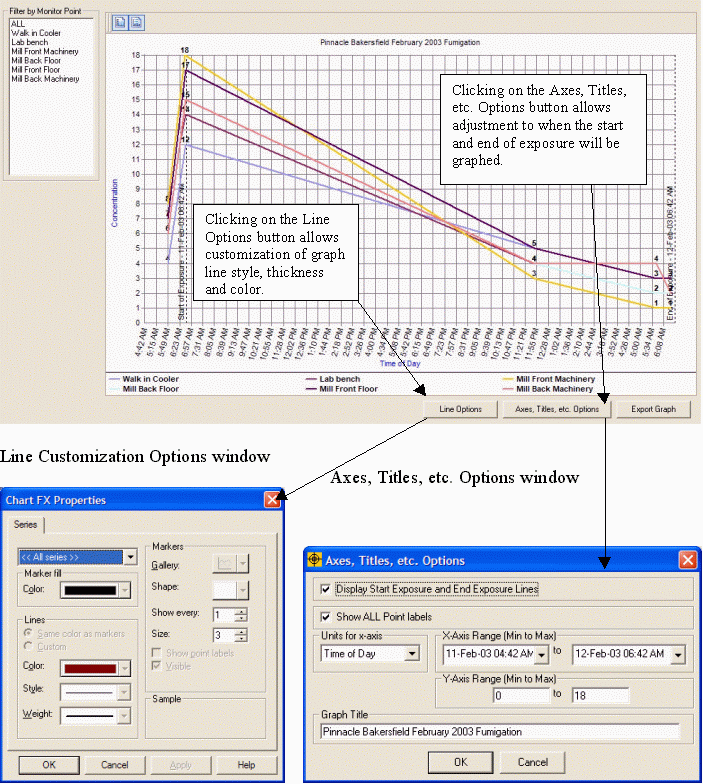
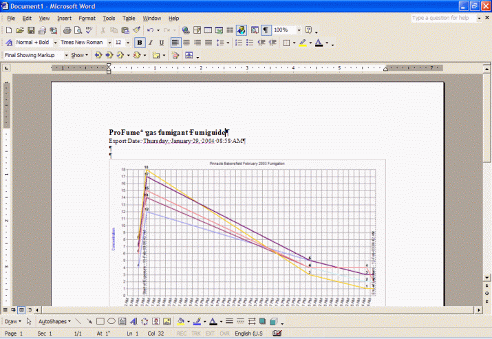

Graph Tab
The Graph tab allows the users to create a diagram of ProFume concentration (vertical axis) by Exposure Time (horizontal axis). The user can set the Start and End of Exposure, Clock or Elapsed Time. Other graphing modifications include the appearance of Monitoring Points by Color, Type, Size of Lines and Point Markers.
The Fumiguide defaults to graph all monitoring data. The data in the Graph grid can be filtered to select any or all of the Monitoring Points.
The graph plots Concentration (y-axis) against Time or Elapsed Time (x-axis). The y-axis has a default range of 0 up to the maximum initial concentration among the Areas within the particular job. The x-axis has a default range of Start of Introduction up to End of Exposure.
Note: Changing the Start Exposure or End Exposure Times in the Graph tab do not affect any Fumiguide calculations on other tabs. To change Exposure Time in dosage calculations the user must change Start Exposure or End Exposure in the Monitoring Data Input tab or Monitoring Status tab.

The users have the option to change the x-axis and y-axis range. Users also have the option to set the units of the x-axis to Clock Time (4:42 AM) or Elapsed Time (18 hours). Users also have the option to show or hide the dashed vertical lines which indicate Start of Exposure and End of Exposure time.
The Line Options set by the user will be saved in the database. These properties are the title, background color of the graph, units for the x-axis (time or elapsed time), line indicators, x-axis range and y-axis range.
By clicking the Export Graph button, the ProFume Fumiguide will export the graph to a new MS-Word document. Additional information related to the exported graph can be typed on the same page as the graph if desired. Once any notes are made, the MS-Word document with one or more graphs can be saved to the desired folder on the computer.

*Trademark of Dow AgroSciences LLC